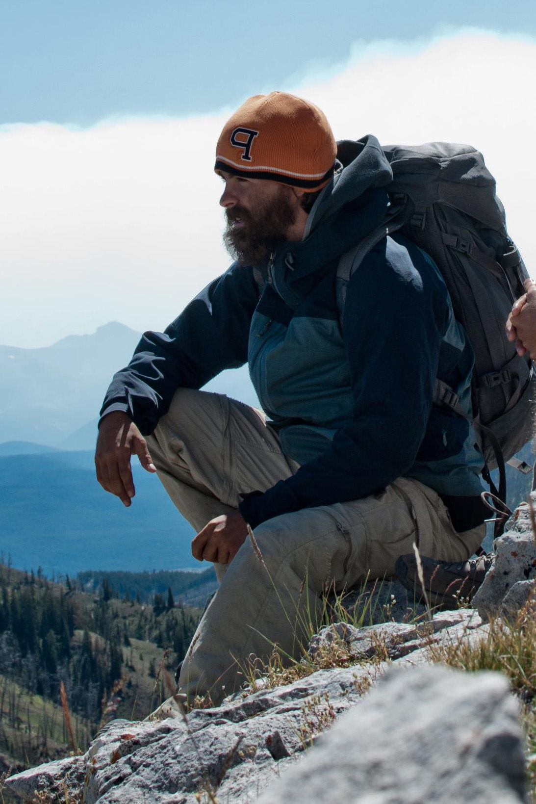

I am an Assistant Professor in the
School of Earth and Ocean Sciences, University of Victoria. The goal of my research is to use sedimentary rocks to better understand how the Earth-system
responds to changing boundary conditions. The history of life and climate on Earth is intricately tied to the coevolution of the biosphere, atmosphere, and lithosphere over billions of years. Ancient sediments are the fragmented historical record
of these systems, and detailed reconstructions of key moments in the development of our planet offer a critical perspective on the rarity and role of life in our universe. Moreover, the ancient sedimentary record provides a baseline to
differentiate naturally occurring change from human caused change and can reveal feedbacks that may become critically important in future climate change. I investigate this sedimentary record by merging modern data science tools and models with
geospatial, geochemical, and stratigraphic data collected during detailed field work. My PhD research focused specifically on the relationships between sea level fall, diagenesis, and the global carbon cycle during the late Paleozoic Ice Age.
More recent projects include developing methods to convert discrete sequences of sedimentary facies into quantified signals of environmental change (such as changing water depth), and collecting sedimentary data from the Bahamas to refine the
mantle rheology and ice history assumptions that underpin estimates of sea level during the last interglacial.